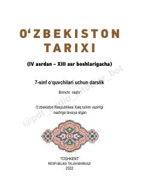

OT7-sinf oʻquvchilari uchun IV-XIII asrlar Oʻzbekiston tarixiga oid darslik.
Ushbu darslik 7-sinf oʻquvchilari uchun moʻljallangan boʻlib, IV asrdan XIII asr boshlarigacha boʻlgan Oʻzbekiston hududidagi tarixiy jarayonlarni qamrab oladi. Kitobda oʻrta asrlar davlatchiligi, buyuk mutafakkirlar merosi va xalqimizning ijtimoiy-siyosiy hayoti haqida batafsil maʼlumotlar keltirilgan.